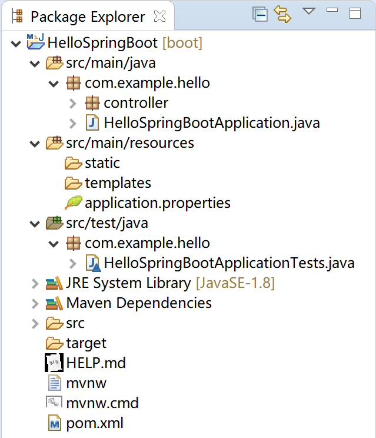

3.1 项目结构
Spring官方为我们生成的项目，都具有固定的项目结构。下面，我们以上一章提供的“Hello Spring Boot”项目为例，来介绍Spring Boot的项目结构。

3.1.1 Maven配置文件
pom.xml文件，maven项目的配置依赖管理文件。其中包含了Spring Boot版本、各种starter和spring-boot-maven-plugin插件。
<?xml version="1.0" encoding="UTF-8"?>
<project xmlns="http://maven.apache.org/POM/4.0.0" xmlns:xsi="http://www.w3.org/2001/XMLSchema-instance"
xsi:schemaLocation="http://maven.apache.org/POM/4.0.0 https://maven.apache.org/xsd/maven-4.0.0.xsd">
<modelVersion>4.0.0</modelVersion>
<parent>
<groupId>org.springframework.boot</groupId>
<artifactId>spring-boot-starter-parent</artifactId>
<version>2.2.1.RELEASE</version>
<relativePath/> <!-- lookup parent from repository -->
</parent>
<groupId>com.example</groupId>
<artifactId>hello</artifactId>
<version>0.0.1-SNAPSHOT</version>
<name>HelloSpringBoot</name>
<description>My First Spring Boot Project.</description>
<properties>
<java.version>1.8</java.version>
</properties>
<dependencies>
<dependency>
<groupId>org.springframework.boot</groupId>
<artifactId>spring-boot-starter-web</artifactId>
</dependency>
<dependency>
<groupId>org.springframework.boot</groupId>
<artifactId>spring-boot-starter-test</artifactId>
<scope>test</scope>
<exclusions>
<exclusion>
<groupId>org.junit.vintage</groupId>
<artifactId>junit-vintage-engine</artifactId>
</exclusion>
</exclusions>
</dependency>
</dependencies>
<build>
<plugins>
<plugin>
<groupId>org.springframework.boot</groupId>
<artifactId>spring-boot-maven-plugin</artifactId>
</plugin>
</plugins>
</build>
</project>
- spring-boot-starter-parent：是 Spring Boot的版本仲裁中心，其指定了Spring Boot的版本；
- starter启动器：Spring Boot的各种模块依赖，基于自动配置，为我们做了大量的配置依赖工作；
- spring-boot-maven-plugin插件： 能够以Maven的方式为应用提供Spring Boot的支持，即为Spring Boot应用提供了执行Maven操作的可能。 能够将Spring Boot应用打包为可执行的jar或war文件，然后以通常的方式运行Spring Boot应用。
这里特别说明一下spring-boot-maven-plugin提供的5个Maven Goals：
- spring-boot:repackage，默认goal。在mvn package之后，再次打包可执行的jar/war，同时保留mvn package生成的jar/war为.origin；
- spring-boot:run，运行Spring Boot应用；
- spring-boot:start，在mvn integration-test阶段，进行Spring Boot应用生命周期的管理；
- spring-boot:stop，在mvn integration-test阶段，进行Spring Boot应用生命周期的管理；
- spring-boot:build-info，生成Actuator使用的构建信息文件build-info.properties。
3.1.2 src/main/java
代码主目录，Spring Boot的启动类就在这里。例如，com.example.hello.HelloSpringBootApplication。
启动类管理了其下的各个package的默认扫描，例如扫描其下package中的Controller。
根据项目开发规范，一般而言，其实体类(entity) 、数据访问类(Dao) 、服务类(Service) 、前端控制器(Controller) 、常量接口类(constant) 和一些工具类(utils) 都应该放置在这里。
3.1.3 src/main/resources
各种资源，如配置文件application.properties都应该放在这里。如果你的程序使用了MyBatis，则其mapper文件也应该放在这里的某个子目录下。
静态资源文件存放在static子目录中。如果你的Spring Boot应用是个前后端分离的项目，为了简化部署（只有一台服务器，服务用户人数在50人左右的简单应用），可以将前端vue的对应文件放置在这里，然后使用java -jar xxx.jar就可以运行这个程序了。
动态模板文件存放在templates子目录中。例如项目中的Thymeleaf 模板文件。
3.1.4 src/test/java
顾名思义，这里是单元测试代码的栖身之处。
以第1章 Spring Boot介绍中的“Hello Spring”项目为例，HelloSpringBootApplicationTests这个测试类就存放在这个目录下。
package com.example.hello;
import org.junit.jupiter.api.Test;
import org.springframework.boot.test.context.SpringBootTest;
@SpringBootTest
class HelloSpringBootApplicationTests {
@Test
void contextLoads() {
}
}